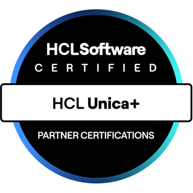

HCL Discover、HCL Unica 與 Magnolia 都是行銷部門熟悉的產品。差別在導入的人：奧洛在台灣負責這三個產品的銷售、建置與維護。

HCL 認證合作夥伴直接與原廠技術團隊協作。導入期間的產品問題由奧洛處理，您不必自己找原廠窗口。Discover 與 Unica 的地端與容器部署依 HCLSoftware 產品文件；Magnolia 提供自行架設版本。
HCLSoftware 的數位體驗分析平台
記錄顧客在網站與 App 上的每一段操作，讓您回放卡關的那一刻，而不是只看到流失的數字。
GA4 告訴您多少人在哪一頁離開，但看不到那個人做了什麼。它沒有工作階段錄影，標準版的事件明細也只保留 14 個月。
資料保留：Google Analytics 說明文件〈資料保留〉，標準資源的事件資料最長 14 個月。support.google.com。沒有錄影：Microsoft Clarity 官方部落格，「GA4 does not offer the ability to view actual user sessions」。clarity.microsoft.com。2026 年 11 月查閱。
每一段操作都留下來。您可以回放那位顧客在哪一格重填了幾次、錯誤訊息出現在哪裡、最後為什麼放棄，再決定要改版面，還是讓專員當下介入。
2025 年 IDC MarketScape 全球客戶分析應用評估，HCLSoftware 以 HCL Discover+ 被列為 Major Player。
IDC MarketScape: Worldwide Customer Analytics Applications 2025 Vendor Assessment，引自 HCLSoftware 官網 hcl-software.com。
敏感欄位在瀏覽器端就被清掉。原廠文件寫明，經前端框架清洗的敏感資料永遠不會到達 HCL Discover；遮罩方式有清空、固定字元、保留字元型態與自訂函式四種。
HCL Discover 12.2.2 文件〈Data Privacy and Blocking Sensitive Data〉 help.hcl-software.com。
指定的工作階段可以長期封存，作為合規與爭議處理的證據。原廠 2020 年發布時就把稽核與不可否認性列為受監理產業的用途。
HCL Discover 12.2.2〈HCL Discover capabilities〉Session Archiving help.hcl-software.com；HCLSoftware 新聞稿 2020-09-30 hcl-software.com。
逐頁重現顧客的點擊、輸入、捲動與錯誤，可依客戶、時間、頁面與事件搜尋，從指標異常一路找到行為原因。
自動標記暴怒點擊、無效點擊、表單放棄與頁面迴圈，並偵測轉換率與錯誤率的異常波動。
點擊熱圖、注意力圖，以及每個表單欄位的填寫時間、重複修改次數與放棄率，直接指出版面與欄位的問題。
以圖形化方式定義事件，組合成開戶、申貸、轉帳、繳費等旅程漏斗，看見每一步的轉換與流失。
儀表板、計分卡與定期報表；事件或異常達到門檻時以電子郵件通知，專員可即時介入。
HCL Discover+ 為每段工作階段產生自然語言摘要，標出高風險旅程與原因，不必逐段人工檢視。
以漏斗找出流失的步驟，用回放重現卡關的瞬間，例如文件上傳失敗、身分驗證逾時或提示看不懂，排出修正的優先順序。
設定「停留超過一段時間」「同一欄位重複點擊」「出現錯誤訊息」等告警條件，觸發後由專員或客服主動協助顧客完成。
比較搜尋、LINE、EDM、社群等來源進站後的行為深度與轉換，而不只看流量，找出把顧客導出站外的內容。
產品功能依 HCLSoftware 公開文件整理。
會打開諮詢表單，並先幫您勾好 HCL Discover。
HCLSoftware 的行銷自動化平台
一份名單跨所有通路，由規則決定誰在什麼時候、用哪個通路、收到哪個活動，而不是每個通路各自排程。
EDM、簡訊、LINE 各用一套名單和排程。同一位顧客可能在一週內被三個活動找上，哪個先出、哪個該緩，靠人盯 Excel 協調。
名單只有一份，跨通路共用。接觸頻率、通路偏好與活動優先順序由 Optimize 依規則決定，每一次接觸與回應都記在同一位顧客身上，下一波活動直接用。
Forrester 2025 年《The State of AI for Cross-Channel Marketing Hubs》報告：回覆問卷的 14 家供應商中，HCLSoftware 對報告列出的 26 個 AI 使用情境全部有回覆，涵蓋客戶洞察、內容、成效衡量與助理介面。
Forrester Research 報告（2025 年 6 月問卷），引自 HCLSoftware 部落格 hcl-software.com。報告把各情境的狀態分成三類，每一項的實際狀態請看報告原文。
同一套產品有地端安裝版與容器版。容器版以 Docker、Kubernetes 與 Helm 實作，支援 OpenShift，並提供從地端版遷移到容器版的路徑。
HCL Unica 12.1.5 文件〈Cloud Native Unica〉 help.hcl-software.com。
印度國家銀行（State Bank of India）與 HCLSoftware 合作，以 Unica 進行客戶互動的數位轉型，是公開的大型金融業案例。
HCLTech 新聞稿 hcltech.com。
管理行銷計畫、專案與需求、人力與任務、核准流程與預算，團隊可在同一處協作創意素材與數位資產。
從多個來源取得客戶資料、精確建立客群，跨通路共用名單，並整合活動接觸與回應追蹤，形成完整的行銷閉環。
兼顧接觸疲勞與客戶偏好，避免不同活動的優惠互相衝突或重複，並依業務目標分配行銷預算與聯繫通路。
以視覺化方式設計、執行與衡量全通路的客戶旅程，可依目標即時調整，並把互動資料送到各個接觸點。
依客戶資料、情境與行為即時推薦下一個最佳行動，可接入網站、電子郵件、IVR、Kiosk、POS 與 ATM，並支援 A/B 測試。
發送並追蹤個人化的電子郵件與簡訊，支援信件設計與內容 A/B 測試，通路事件可觸發後續的聯繫流程。
以點選方式設定資料來源與目標端點的欄位對應，支援驗證、流量限制與重試，可連接常用的電子郵件、簡訊與 CRM 服務。
集中式優惠管理（Unica COM）、部署監控（Unica Director）與即時洞察（Unica Insights）。
產品功能依 HCLSoftware 公開資料整理。行為軌跡可搭配 HCL Discover，客戶資料可搭配 AURA CDP。
會打開諮詢表單，並先幫您勾好 HCL Unica。
Magnolia 的企業級內容管理平台
行銷人員在視覺化編輯器裡直接改網站與 App 的內容，同一份內容發到每個通路，不用每改一次就排工程師時程。
改一張活動頁要等工程師排程。多品牌、多語言的網站各自維護，同一則公告要貼五次，貼完還會不一樣。
行銷人員在視覺編輯器裡直接改前端元件、即時預覽、送審發布。內容只有一份，網站、App 與其他通路取同一份，一處更新到處生效。
2025 年 Gartner 數位體驗平台魔力象限，Magnolia 列為 Visionary，連續第五年入選；該年共評比 16 家供應商。
Magnolia 新聞稿 2025-01-30（報告日期 2025-01-28） magnolia-cms.com；供應商數依 CX Today 報導 cxtoday.com。
1997 年於瑞士巴塞爾創立，2003 年推出 Java 開源 CMS，全球 200 多家認證夥伴，客戶包括 Toyota、Nissan、Generali、Sanofi 與 American Express。
Magnolia 官網 About 頁 magnolia-cms.com。客戶名單為官網所列。
Visual SPA Editor 讓編輯人員在視覺化頁面編輯器裡直接編輯 React、Angular、Vue 前端的內容；內容經 Delivery API 輸出，前端可放在 Magnolia 以外的 CDN 或應用伺服器。
Magnolia 官方文件〈Visual SPA Editor〉 docs.magnolia-cms.com、〈SPA development〉 docs.magnolia-cms.com。
以視覺化方式編排頁面與體驗，編輯工具容易上手。
內容中心彙整多個來源的內容、資料與應用程式，依貴機構的內部流程與審核步驟管理。
透過同一個介面把內容發布到網站、App 與其他通路，讓顧客在每個接觸點看到一致的內容。
依對象呈現個人化內容，支援搜尋引擎最佳化、A/B 測試與成效分析。
以 AI 協助撰寫與調整內容。
提供商務、行銷自動化、數位資產管理與分析四類整合框架，可接上既有系統與未來新增的資料來源。
產品功能依 Magnolia 原廠公開資料整理。
會打開諮詢表單，並先幫您勾好 Magnolia CMS。
FAQ
奧洛代理 HCL Discover 數位體驗分析、HCL Unica 行銷自動化與 Magnolia CMS 內容管理，並提供導入與維護服務。客戶數據平台則是奧洛自有的 AURA CDP。
可以。HCL Discover 可部署於企業自有機房（Windows／RHEL 虛擬機或容器），也提供雲端與 HCL 代管選項，金融機構可讓顧客行為資料全程留在境內。
不會留下明文。密碼、OTP、身分證字號、帳號、卡號等欄位在瀏覽器端就遮罩或不擷取，伺服器端再遮罩一次，資料庫與回放畫面都沒有明文。
HCL Unica 包含 Plan、Campaign、Optimize、Journey、Interact、Deliver、Link 等模組，以及 Unica COM、Director、Insights 附加元件，涵蓋行銷資源管理、跨通路活動、客戶旅程與即時個人化推薦。
可以。HCL Discover 與 HCL Unica、HCL CDP 原生整合並提供 REST API；行為軌跡也可以交給 AURA Connect 整理成行銷標籤，再交給 AURA CDP 使用。